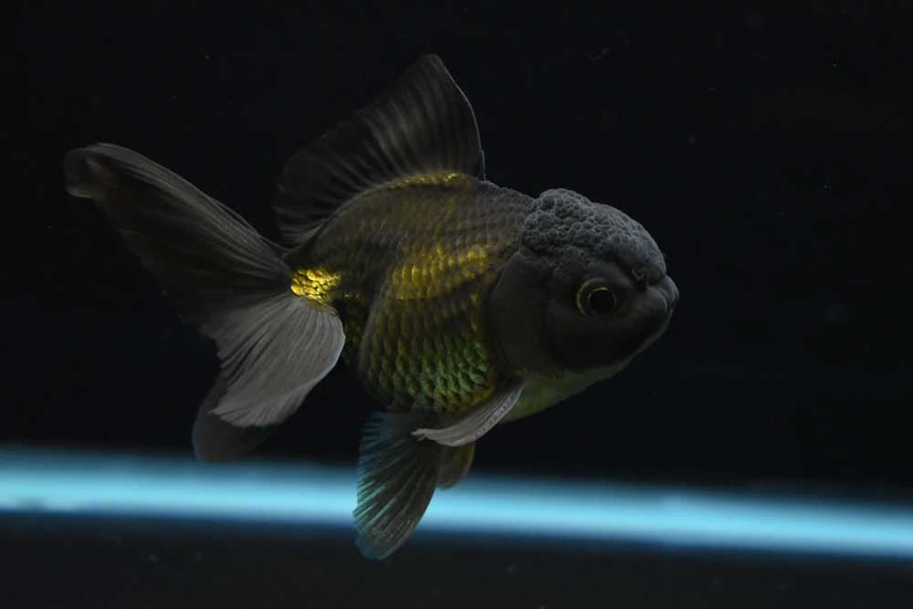
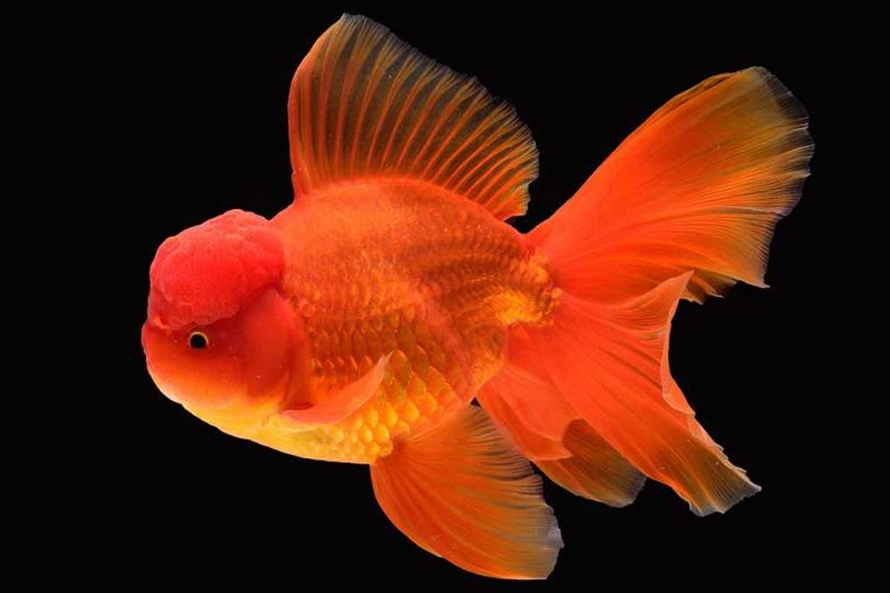
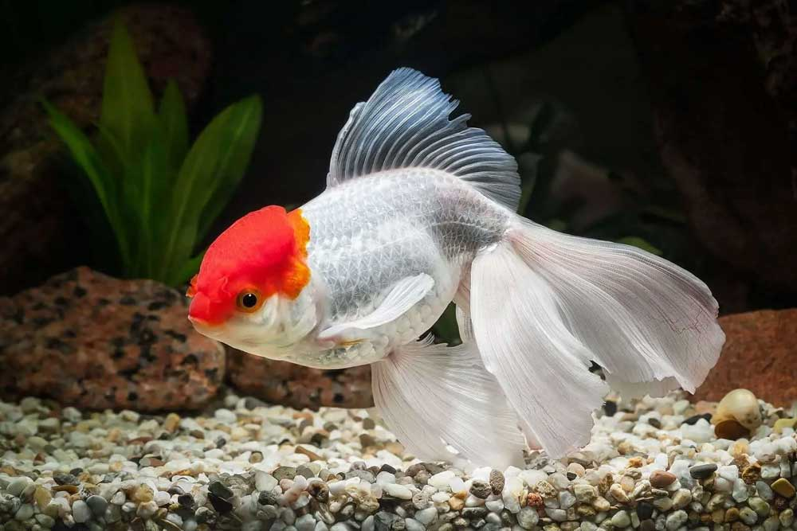

Оранда чорна У чорної золотої рибки у верхній частині голови добре помітний жировий наріст. Тіло і наріст чорні бархатисті. Черевце світле трохи золотисте. Для того, щоб рибка в акваріумі виглядала контрастно, грунт повинен бути світлим.

Оранда червона
Від інших видів відрізняється лише червоним забарвленням тіла та шапочки. Умови утримання та раціон
харчування такий самий, як і в інших видів золотих рибок.

Оранда червона шапочка Найпопулярнішою рибкою серед оранд є червона шапочка. Тіло у неї біле, а наріст на голові яскраво-червоний. Розміри та форма наросту можуть змінюватися.